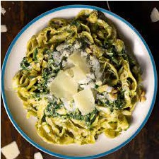

Ingrediënten:
Bereiding:
- Kook de pasta volgens de instructies op de verpakking.
- Verhit een beetje olie in een pan en voeg gewassen spinazie toe. Bak tot de spinazie geslonken is.
- Voeg room toe aan de pan en laat sudderen tot de saus iets is ingedikt.
- Breng op smaak met zout, peper en eventuele andere kruiden.
- Serveer de spinaziesaus over de gekookte pasta.
